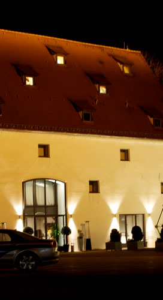
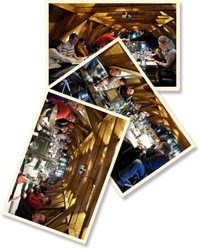

Weinseminare in Leipheim

Restaurant im Zehntstadel
Schlosshof 2
D-89340 Leipheim (bei Ulm)
- Tel 08221-36 98 53
- www.restaurant-im-zehntstadel.de
Termine und Preise 2013
Sensorik-Grundkurs für Einsteiger
- Sa./So. 2./3. März 2013
- Sa./So. 23./24. November 2013
Wein-Sensorik Grundlagen für Einsteiger - "Geschmacksbilder erschließen, beschreiben und bewerten."
Weinseminarpaket mit Klassik-Menü: 178,- € je Teilnehmer.
Klassik-Menü ohne Kurs für Begleitperson einschließlich Wein, Mineralwasser, Brot: 112,55 € je Teilnehmer.
Weinseminar mit Klassik-Menü zum Paketpreis
- Kursleiter Laurentius Kollmann
- 18 internationale Weine aus Deutschland, Italien und Frankreich
- Klassik Vier-Gang-Degustationsmenü mit korrespondierenden Weinen serviert im Restaurant Zehntstadel
- Sechs Stunden Kurs: Zwei Einheiten zu je drei Stunden.
- Weißbrot und Mineralwasser im Kurs und zum Menü.
- Kursskript
Exklusiv
Die Teilnehmerzahl ist auf 16 begrenzt.
Allgemeine Geschäftsbedingungen (AGB)
Bitte AGB sorgfältig durchlesen
Organisation
Für das Weinseminar ist Ihr Ansprechpartner Laurentius Kollmann.
"Restaurant Zehntstadel"
Das Haus wurde für 7,5 Mio € saniert und 2002 feierlich eingeweiht. Im Erdgeschoss befindet sich das Restaurant und im Dachgeschoss der Seminarraum, der mit einem Fahrstuhl erreichbar ist. Die Architektur verbindet Tradition und Moderne und ist mit seinem geschmackvollen Ambiente der ideale Veranstaltungsort für Wochenend-Weinseminare.
Küchenchef Robert Braun ein köstliches Vier-Gang-Menü zu.
Das Vier-Gang-Menü von Robert Braun (Beispiel)
GEMÜSETERRINE MIT GÄNSELEBERMOUSSE IM BLATTSALATKRANZ AN HIMBEERDRESSING
KÜRBISCREMESÜPPCHEN MIT HONIGCROUTONS
ROSA GEBRATENE FLUGENTENBRUST AN PREISELBEERSAUCE AUF GEMÜSERAGOUT
HALBGEFRORENES VOM ALTEN BALSAMICO MIT WALDBEERGRÜTZE
Geschmackserlebnis auf höchstem Niveau
Lernen Sie, wie Sie Speise und Wein kreativ verbinden können. Gute Weine und gute Speisen werten einander auf. Erleben Sie Geschack auf höchstem Niveau.
Ich serviere zu jedem Gang zwei begleitende Weine und begründe die Weinauswahl ausführlich. Genießen Sie das Zusammenspiel der Aromen und Geschmackskomponenten. Diskutieren Sie das Ergebnis und lernen Sie aus der konkreten Erfahrung im Seminar.
Das Programm für Feinschmecker
Samstag/Sonntag - 2 Tages Seminar
| PROGRAMM | SAMSTAG | SONNTAG |
|---|---|---|
| 10 - 13 Uhr | Kursblock II (Weißwein) | |
| 13 Uhr | Ende der Veranstaltung | |
| 14 - 17 Uhr | Kursblock I (Rotwein) | |
| 19 Uhr | Degustationsmenü mit korrespondierenden Weinen |
Weinseminar-Inhalt
-

Umgang mit Wein
Der richtige Umgang mit Wein
- Trinktemperatur
- Weinverschlüsse
- Korkenzieher
- Weingläser
- Dekantieren
- Flaschenformate
-

Flaschenetikett
Die wichtigsten Einflussfaktoren auf das Geschmacksbild verstehen und mit den Angaben auf dem Flaschenetikett vergleichen
- Erzeuger
- Herkunft
- Rebsorte
- Zustand der gelesenen Trauben
- Vergärung der Weine und Ausbau
- Flaschenreife
-

Wein degustieren
Flüchtigen Empfindungen mit Hilfe von Degustationsnotizen formulieren und festhalten
- Sehen
- Riechen
- Schmecken
Stimmen zum Weinseminar in Leipheim

„Sehr interessantes, kurzweiliges Weinseminar in schöner Atmosphäre.“ Nadine Frankenberg.
„Es lässt sich vieles mitnehmen und umsetzen.“, Franz. J. Heigl.
„Weiter so!“, Peter Rehermann.
Ausführlichere, detailliertere Weinseminarunterlagen wären schön.“, Makus.
„Sehr schöner Einblick in die Verkostung von Wein . Sehr anschauliche Erklärungen.“ Robert.
„Sehr gutes Basiswissen wurde vermittelt an sehr vielfältigen Degustationsbeispielen.“, Sabine Junginger.
„Wunderbare Kombination zwischen Theorie und Praxis. Einfache und nachvollziehbare Systematik.“, Claudia Kaufmann.
„Weinseminar ist sehr zu empfehlen.“, Karl Koetnitz.
Galerie
Weinseminar im "Zehntstadel"
Lageplan Zehntstadel
Größere Kartenansicht